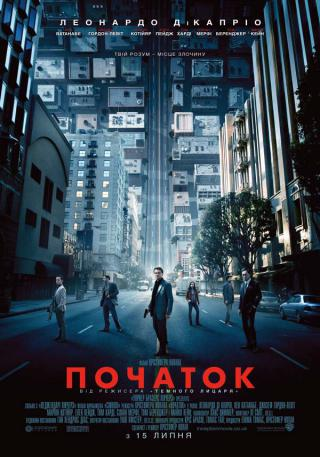

«Початок» (англ. «Inception», точніший переклад — «Вкорінення») — науково-фантастичний трилер 2010 року режисера Крістофера Нолана. У головних ролях знялись Леонардо Ді Капріо, а також Кен Ватанабе, Джозеф Гордон-Левітт, Маріон Котіяр, Еллен Пейдж, Том Гарді, Кілліан Мерфі, Том Беренджер, Діліп Рао і Майкл Кейн.
Сюжет
Домінік Кобб (Леонардо Ді Капріо) прокидається на пляжі, де його виявляють озброєні люди і приводять до господаря — старого-японця. Охорона показує старому речі Кобба: пістолет і мініатюрну металеву дзиґу — тотем Кобба. Старий починає обертати його.
У наступній сцені Кобб в присутності свого напарника Артура (Джозеф Гордон-Левітт) пропонує бізнесмену Саїто (Кен Ватанабе) свої послуги із захисту від вилучення. Насправді, мета Кобба і Артура — секретна інформація Саїто, яку їм вдається вилучити, але несподівано виявляється, що дружина Кобба Мол (Маріон Котіяр) поінформувала Саїто про їх цілі і той відредагував дані. Кобб, тримаючи конверт із секретною інформацією в руках змушений дивитися як Артура катують, стріляючи йому в ногу. Йому не залишається нічого іншого, як вбити Артура, щоб той прокинувся, але через це сон починає руйнуватися. Кобб, Артур і Саїто прокидаються в секретному притулку останнього. Погрожуючи господарю пістолетом, напарники кидають Саїто на килим. Той усвідомлює, що досі спить, коли виявляє, що килим зроблений з іншого матеріалу. Це була помилка «архітектора» сну Неша (Лукас Хаас), який згодом спробує зрадити команду, розповівши все Саїто. Розуміючи, що йому нічого боятися, так як він у сні, Саїто торжествує. Команда перериває місію і прокидається в потязі, який спішно покидає, залишаючи в ньому Саїто.
Саїто знаходить Кобба та Артура і пояснює їм, що це вилучення було перевіркою. Він просить їх виконати «укорінення» — таємно занести ідею в розум людини. В обмін він гарантує Коббу можливість повернутися в США, де його вважають злочинцем. Метою стає Роберт Фішер (Кілліан Мерфі), син вмираючого конкурента Саїто — Моріса Фішера (Піт Постлетуейт), якого треба змусити зруйнувати ділову імперію свого батька, так як на їхньому шляху залишився тільки Саїто. Артур стверджує, що укорінення неможливе. Кобб не погоджується, кажучи про те, що одного разу він вже це робив.
Потребуючи нового «архітектора», Кобб відвідує Париж і наставника Майлса (Майкл Кейн), який представляє йому одну зі своїх найкращих студенток — Аріадну (Елен Пейдж). Вона повинна замінити Неша, який провалив операцію та здав команду Кобол Інжиніринг. Решта учасників — Імс (Том Харді), який змінює свій вигляд у снах, і Юсуф (Діліп Рао), фармацевт, який виробляє снодійне для команди.
Аріадна ставиться до Кобба з підозрою через зіткнення з Мол. Їй стає відомо, що Кобб і Мол разом збудували в лімбі [3] ціле місто, в якому прожили в мирі і злагоді цілих 50 років. Кобб, тим не менш, захотів повернутися в реальність і почав переконувати Мол, яка категорично відмовлялася. Тоді він здійснив «укорінення» в її розум ідеї про те, що вони уві сні, а не в реальності. Постарівши Кобб і Мол лягають на рейки, щоб потрапити під потяг і повернутися в реальність. Вони вмирають, тримаючись за руки. [3] Проте «укорінення» ідеї подібно вірусу — поступово воно повністю захоплює свідомість людини, і Мол, перебуваючи вже в реальності, стала сумніватися щодо її істинності. Вона переконала себе, що досі знаходиться уві сні, і мала намір вчинити самогубство, щоб «прокинутися». Намагаючись змусити чоловіка піти за собою, вона відправила до прокуратури заяву про те, що саме він винен у її смерті. Незважаючи на прохання Мол, Кобб відмовився і став мимовільним свідком її самогубства, коли вона викинулася з балкона. Папери, що залишила Мол дозволили владі звинуватити Кобба у вбивстві, що змусило його тікати зі США, де у нього залишилося двоє дітей, спогади про які невідступно переслідували його.
Імс розробляє план укорінення, що базується на складних відносинах Фішера з батьком. Ідея повинна бути схожою на власну думку, а не навіювану кимось. План вимагає використання декількох рівнів сну, що відповідають глибшим рівням підсвідомості Фішера. Коли помирає Моріс, команда опиняється на одному з Робертом рейсі з Сіднея до Лос-Анджелеса, що триває десять годин.
Юсуф став сновидцем першого сну, що мав місце в дощовому місті. Команда викрадає Роберта, але стає жертвою нападу його «проекцій»-охоронців, в результаті якого серйозно ранять Саїто. Кобб розуміє, що Роберта навчали перешкоджати викрадачам. Скасувати місію через сильне снодійне не можна, але якщо членів команди вб'ють, то вони потраплять в лімб, де неможливо розрізнити сон і реальність і можна втратити глузд. Щоб почати укорінення, Імс приймає образ Пітера Браунінга (Том Беренджер), хрещеного батька Роберта. Він говорить, що в офісі Моріса був сейф із заповітом, в якому вказано його бажання розділити свою компанію. Команда Кобба під виглядом викрадачів вимагає назвати код до сейфу. Роберт не знає комбінацію і називає випадкові шість цифр — 5,2,8,4,9,1. Команда сідає у фургон, щоб втекти від охоронців Роберта.
Вони входять у другий сон (Артура) — готель, створений, як і всі інші рівні сну, Аріадною. Юсуф залишається в першому сні, керуючи машиною. Укорінювачі переконують Роберта, що викрадення в першому сні було організовано Браунінгом, щоб дізнатися код і знищити заповіт. Вони переконують його зануритися в один сон з Браунінгом, щоб вивідати його справжні мотиви. Тим самим вони спускаються до підсвідомості Роберта ще глибше. Артур залишається в готелі для їхнього захисту.
Третій сон (Імса) відбувається в засипаній снігом фортеці. Саїто і Роберт починають пошук сховища з сейфом, а Кобб і Аріадна разом з Імсом відволікають численні «проекції» Роберта у вигляді охоронців фортеці. Саїто помирає від ран, а Мол у фортеці вбиває Роберта перш, ніж той увійшов до сховища. Кобб вбиває Мол. Аріадна пропонує повернути Роберта до життя, увійшовши в лімб.
У лімбі Кобб і Аріадна потрапляють в місто, створене раніше Коббом і Мол. Знайшовши її, Кобб пояснює Аріадні, звідки знає про можливість укорінення. Мол відмовилася залишити вигаданий ними світ, і Кобб прищепив їй ідею, що її життя було сном. Ідея стала занадто сильною, і прокинувшись, Мол вважала, що досі спить. Це призвело її до самогубства. Тому проекція Мол заважає роботі Кобба, бо є проявом його провини за її смерть. Кобб усвідомлює, що його дружина мертва і звинувачує себе в її загибелі.
Стратегія виходу команди залежить від застосування «поштовху», відчуття падіння або перекидання, яке розбудить людини. Щоб повернутися в реальний світ, вони повинні організувати ряд послідовних поштовхів на всіх рівнях сну. Перший поштовх відбудеться, коли машина Юсуфа впаде з мосту, але він змушений зробити це раніше і, оскільки поштовхи не узгоджені, команда не прокидається. Через падіння фургона з мосту готель виявляється в умовах невагомості. Артур переносить команду всередину ліфта, який оснащує вибухівкою (ліфт прискорюється в невагомості за рахунок вибухівки, тим самим створюючи ефект сили тяжіння за рахунок прискорення ліфта). Третій поштовх відбувається уві сні через активації детонаторів навколо фортеці.
Роберта повертає до життя за допомогою дефібрилятора Імс і Аріадна, скинувши його з хмарочоса в лімбі. Він повертається в сховище, де знаходить проекцію вмираючого батька — Моріса Фішера. Він говорить, що розчарований не тим, що його син не зміг піти його шляхом, а тим, що намагався жити з вже існуючим майном, а не набути своє. Сейф містить паперовий заповіт і предмет з дитинства Роберта, що допомагають йому знайти емоційний катарсис. Роберт вирішує розділити батьківську корпорацію, з метою самостійно домогтися успіху. Таким чином, операція укорінення успішно завершена.
Аріадна зістрибує з балкона будинку в лімбі, щоб повернутися в третій сон, поштовх якого синхронізований з рештою снів. Механізм таймера повертає їх у реальність, як тільки закінчується дія снодійного.
Щоб врятувати Саїто, Кобб залишається в лімбі. Повторюється перша сцена фільму, в якій Кобб потрапив до Саїто. Він став дідом через різницю в часі між снами і прожив життя, не знаючи про те, що спить. Саїто пам'ятає Кобба і піднімає пістолет. Далі Кобб прокидається в літаку, де все йде за планом. Саїто виконує обіцянку, Кобб повертається до Америки до своєї родини. Коли він заходить в будинок, то запускає на столі дзиґу, щоб перевірити, чи не спить він, але відволікається на дітей, що грають в саду (раніше він не міг згадати і бачити їхні обличчя). Дзиґа продовжує обертатися, але чи зупиниться вона чи ні, у фільмі не показано.
Нагороди
- Оскар за кращий фільм 2011 року